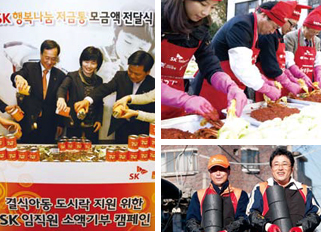
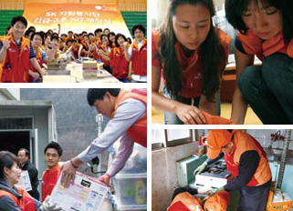

SK 자원봉사단
SK는 2004년 봉사단을 창단한 이래 우리 사회의 행복극대화를 실현하기 위한 자원봉사문화를 확산시켜 나가고 있습니다.SK 그룹 구성원의 약 90%이상이 400여 개의 다양한 봉사단에서 활동하고 있습니다.
구성원들은 주로 각사 단위조직 차원에서 사회곳곳에서 사회공헌활동을 펼치고 있으며, 최태원 회장을 비롯 각사 CEO 등도 솔선수범하여 봉사활동에 참여하고 있습니다.
행복나눔의 계절

매년 11~12월을 SK행복나눔계절로 선포하고, 연탄배달, 김치 담그기, 결식이웃과 소년소녀가장 돕기 등 다양한 자원봉사활동을 실시하고 있습니다.
긴급구호활동

재난 발생 시 피해 이웃들에게 신속한 지원을 위해 ’09년부터 긴급구호 KIT을 제작 및 구호 활동을 전개하고 있습니다.
SK 프로보노
2009년 9월 최초로 재능 나눔 자원봉사단인 ‘SK 프로보노 봉사단’을 출범하여 SK가 보유하고 있는 자원과 역량을 공공을 위한 기업 및 단체의 경영 역량 제고를 위해 적극 활용함과 동시에 지속 가능한 일자리 창출과 사회서비스 제공을 확대하는데 기여하고 있습니다.
SK 프로보노란?
SK 구성원이 개인 또는 기업활동과 관련하여 보유한 역량을 기반으로 일정 수준 이상의 Professional Service*를 공익 및 동반성장 등을 위하여 조직/개인에게 무료로 제공하는 활동 또는 이에 참여하는 구성원
- Professional Service → 기업/단체 활동과 관련된 전 분야 (경영전략/마케팅홍보, 인사/노무, 법무, 재무/회계, 디자인, 무역, IR, IT, 사진,요리 등)
- 기본적으로 사회적기업 및 예비 사회적기업이 1차 지원 대상이며, 이 외 공익을 위해 마을기업, NGO/NPO, 미소금융대출 소상공인 등으로 대상 확대